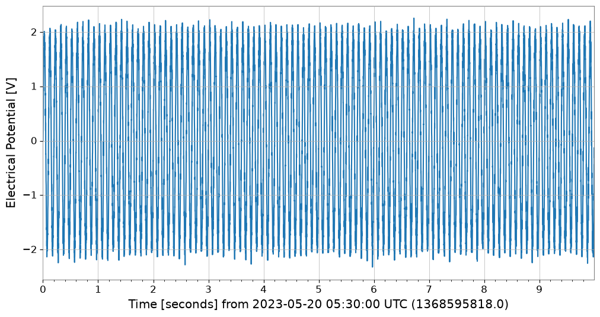
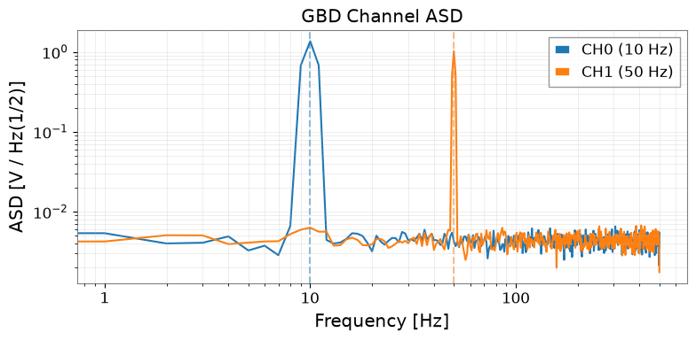
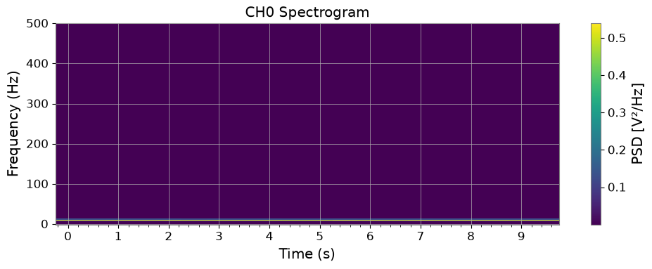
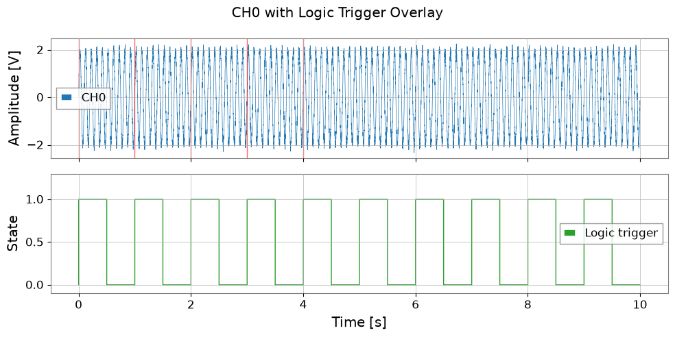

Note
This page was generated from a Jupyter Notebook. Download the notebook (.ipynb)
[1]:
# Skipped in CI: Colab/bootstrap dependency install cell.
Case Study: GBD Format I/O

This tutorial demonstrates reading and writing GBD files — the native binary format of GRAPHTEC data loggers (GL Series) widely used in KAGRA and other experiments for PEM/environmental monitoring.
What is GBD?
GBD (GRAPHTEC Binary Data) is a proprietary format featuring:
ASCII header with metadata (channel names, sample rate, local timestamp, amplitude ranges)
Binary data block (float32/int16 depending on model)
Multi-channel recording (up to 32 channels simultaneously)
Optional digital (logic) channels
gbd2gwf.py and read_gbd.py scripts in legacy KAGRA repositories have been consolidated into gwexpy.timeseries.io.gbd.[2]:
import warnings
warnings.filterwarnings("ignore", category=UserWarning)
warnings.filterwarnings("ignore", category=DeprecationWarning)
import tempfile
from pathlib import Path
import matplotlib.pyplot as plt
import numpy as np
from gwexpy.timeseries import TimeSeries, TimeSeriesDict, TimeSeriesMatrix
1. Create a Synthetic GBD File for Demonstration
We synthesize a minimal valid GBD file so this tutorial runs without requiring real hardware.
The GBD structure is:
[ASCII Header] (fixed HeaderSize bytes)
[Binary Data] (N_counts × N_channels × itemsize bytes)
[3]:
def make_synthetic_gbd(path: Path, n_samples: int = 10000, fs: float = 1000.0):
"""Write a minimal synthetic GBD file (GRAPHTEC GL-series format)."""
rng = np.random.default_rng(7)
t = np.arange(n_samples) / fs
ch0 = 2.0 * np.sin(2 * np.pi * 10.0 * t) + 0.1 * rng.normal(0, 1, n_samples) # 10 Hz
ch1 = 1.5 * np.sin(2 * np.pi * 50.0 * t) + 0.1 * rng.normal(0, 1, n_samples) # 50 Hz
ch2 = np.where(np.sin(2 * np.pi * 1.0 * t) > 0, 1.0, 0.0).astype(np.float32) # digital trigger
local_start = "2023-05-20 14:30:00.000"
local_stop = f"2023-05-20 14:30:{n_samples / fs:.3f}"
header_lines = [
"[Header]",
"HeaderSize = 1024",
f"Start = {local_start}",
f"Stop = {local_stop}",
f"Sample = {1000.0 / fs:.3f}ms",
"Type = little,float32",
"Order = CH0, CH1, CH2_LOGIC",
f"Counts = {n_samples}",
"$AMP",
"CH0 = , , 10V",
"CH1 = , , 5V",
"CH2_LOGIC = , , 1V",
]
header_str = "\r\n".join(header_lines) + "\r\n"
header_bytes = header_str.encode("ascii")
# Pad to 1024 bytes
header_bytes = header_bytes.ljust(1024, b"\x00")
# Data block: interleaved float32 (N_samples × N_channels)
data = np.stack([ch0, ch1, ch2], axis=1).astype(np.float32) # (N, 3)
with open(path, "wb") as f:
f.write(header_bytes)
f.write(data.tobytes())
print(f"Written: {path} ({path.stat().st_size / 1024:.1f} KB)")
# Write to a temporary file
tmpdir = Path(tempfile.mkdtemp())
gbd_path = tmpdir / "synthetic_pem.gbd"
make_synthetic_gbd(gbd_path, n_samples=10000, fs=1000.0)
Written: /tmp/tmpxe3htht9/synthetic_pem.gbd (118.2 KB)
2. Read GBD File into TimeSeriesDict
Use TimeSeriesDict.read() with format='gbd'. The timezone parameter is required because GBD timestamps are stored in local time.
[4]:
# Read all channels
tsd = TimeSeriesDict.read(
str(gbd_path),
format='gbd',
timezone='Asia/Tokyo', # JST (UTC+9) – required for GPS time conversion
)
print("Channels read:", list(tsd.keys()))
for name, ts in tsd.items():
print(f" {name:15s}: {len(ts.value):6d} samples, dt={ts.dt}, unit={ts.unit}")
Channels read: ['CH0', 'CH1', 'CH2_LOGIC']
CH0 : 10000 samples, dt=0.001 s, unit=V
CH1 : 10000 samples, dt=0.001 s, unit=V
CH2_LOGIC : 10000 samples, dt=0.001 s, unit=V
[5]:
# Read only specific channels
tsd_subset = TimeSeriesDict.read(
str(gbd_path),
format='gbd',
timezone='Asia/Tokyo',
channels=['CH0', 'CH1'], # only analog channels
)
print("Subset channels:", list(tsd_subset.keys()))
Subset channels: ['CH0', 'CH1']
[6]:
# Read a single TimeSeries
ts_ch0 = TimeSeries.read(
str(gbd_path),
format='gbd',
timezone='Asia/Tokyo',
channels=['CH0'],
)
print(f"CH0: t0={ts_ch0.t0:.3f}, dt={ts_ch0.dt}, N={len(ts_ch0.value)}")
ts_ch0.plot(xscale='seconds');
CH0: t0=1368595818.000 s, dt=0.001 s, N=10000

3. Signal Analysis on GBD Data
Once loaded, all gwexpy analysis methods are available.
[7]:
ts_ch0 = tsd['CH0']
ts_ch1 = tsd['CH1']
# ASD comparison
asd_ch0 = ts_ch0.asd(fftlength=1.0, overlap=0.5)
asd_ch1 = ts_ch1.asd(fftlength=1.0, overlap=0.5)
fig, ax = plt.subplots(figsize=(8, 4))
ax.loglog(asd_ch0.frequencies.value, asd_ch0.value, label='CH0 (10 Hz)')
ax.loglog(asd_ch1.frequencies.value, asd_ch1.value, label='CH1 (50 Hz)')
ax.axvline(10, color='C0', linestyle='--', alpha=0.5)
ax.axvline(50, color='C1', linestyle='--', alpha=0.5)
ax.set_xlabel('Frequency [Hz]')
ax.set_ylabel(f'ASD [{asd_ch0.unit}]')
ax.set_title('GBD Channel ASD')
ax.legend()
ax.grid(True, which='both', alpha=0.3)
plt.tight_layout()

[8]:
# Spectrogram of CH0
sg = ts_ch0.spectrogram(stride=0.5, fftlength=0.4, overlap=0.2)
fig, ax = plt.subplots(figsize=(10, 4))
mesh = ax.pcolormesh(
sg.times.value,
sg.frequencies.value,
sg.value.T,
shading='auto',
)
ax.set_xscale('auto-gps')
ax.set_xlabel('Time (s)')
ax.set_ylabel('Frequency (Hz)')
ax.set_title('CH0 Spectrogram')
plt.colorbar(mappable=mesh, ax=ax, label='PSD [V²/Hz]')
plt.tight_layout()

[9]:
# Digital channel: use as event trigger
ts_logic = tsd['CH2_LOGIC']
# Find trigger-on times (0→1 transitions)
logic_val = ts_logic.value
transitions = np.where(np.diff(logic_val) > 0.5)[0] # rising edges
t_axis = np.arange(len(logic_val)) * ts_logic.dt.value
trigger_times = t_axis[transitions]
print(f"Logic trigger ON events: {len(trigger_times)}")
fig, axes = plt.subplots(2, 1, figsize=(10, 5), sharex=True)
axes[0].plot(t_axis, ts_ch0.value, lw=0.5, label='CH0')
for tt in trigger_times[:5]:
axes[0].axvline(tt, color='red', alpha=0.6, lw=1.0)
axes[0].set_ylabel('Amplitude [V]')
axes[0].legend()
axes[1].step(t_axis, logic_val, where='post', color='C2', lw=1.0, label='Logic trigger')
axes[1].set_xlabel('Time [s]')
axes[1].set_ylabel('State')
axes[1].set_ylim(-0.1, 1.3)
axes[1].legend()
plt.suptitle('CH0 with Logic Trigger Overlay')
plt.tight_layout()
Logic trigger ON events: 10

4. TimeSeriesMatrix from GBD
For batch multi-channel analysis, load directly into a TimeSeriesMatrix.
[10]:
# Read all analog channels as TimeSeriesMatrix
tsm = TimeSeriesMatrix.read(
str(gbd_path),
format='gbd',
timezone='Asia/Tokyo',
channels=['CH0', 'CH1'],
)
print("TimeSeriesMatrix shape:", tsm.shape) # (2, 1, N)
# ASD of all channels at once
try:
asd_all = tsm.asd(fftlength=1.0, overlap=0.5)
asd_all.plot(subplots=True)
except AttributeError:
# GBD reader may create irregular time axis; fall back to per-channel ASD
_asds = {name: tsd[name].asd(fftlength=1.0, overlap=0.5) for name in list(tsd.keys())[:2]}
print("Per-channel ASD:", {k: f"{v.df.value:.4f} Hz/bin" for k, v in _asds.items()})
TimeSeriesMatrix shape: (2, 1, 10000)
Per-channel ASD: {'CH0': '1.0000 Hz/bin', 'CH1': '1.0000 Hz/bin'}
5. Timezone Handling
GBD files store timestamps in local time (the logger’s clock). gwexpy converts these to GPS time automatically using the timezone parameter.
Timezone |
IANA name |
UTC offset |
|---|---|---|
Japan Standard Time (KAGRA) |
|
+09:00 |
US Eastern (LIGO Hanford, LLO) |
|
−05:00 / −04:00 |
Europe/Central (Virgo) |
|
+01:00 / +02:00 |
UTC |
|
±00:00 |
[11]:
# Check GPS start time resulting from timezone conversion
tsd_jst = TimeSeriesDict.read(str(gbd_path), format='gbd', timezone='Asia/Tokyo')
tsd_utc = TimeSeriesDict.read(str(gbd_path), format='gbd', timezone='UTC')
t0_jst = tsd_jst['CH0'].t0
t0_utc = tsd_utc['CH0'].t0
print(f"t0 (JST→GPS): {t0_jst:.3f}")
print(f"t0 (UTC→GPS): {t0_utc:.3f}")
print(f"Difference: {(t0_jst - t0_utc).value:.1f} s (should be 9×3600 = 32400 s)")
t0 (JST→GPS): 1368595818.000 s
t0 (UTC→GPS): 1368628218.000 s
Difference: -32400.0 s (should be 9×3600 = 32400 s)
6. Migration Guide: Legacy gbd2gwf.py → gwexpy
Before (legacy scripts):
# gbd2gwf.py style
import numpy as np
from gwpy.timeseries import TimeSeries, TimeSeriesDict
# Manual header parsing
with open('data.gbd', 'rb') as f:
header = f.read(1024).decode('ascii')
# ... parse Start, Sample, Order, Counts by hand ...
n_ch = len(channels)
data = np.frombuffer(f.read(), dtype='<f4').reshape(-1, n_ch)
# Manual GPS time conversion
import pytz
from gwpy.time import to_gps
tz = pytz.timezone('Asia/Tokyo')
t_local = datetime.strptime(start_str, '%Y-%m-%d %H:%M:%S')
t_utc = tz.localize(t_local).astimezone(pytz.utc)
gps_start = to_gps(t_utc.strftime('%Y-%m-%dT%H:%M:%S'))
# Build dict manually
tsd = TimeSeriesDict()
for i, ch in enumerate(channels):
tsd[ch] = TimeSeries(data[:, i] * scale[i], t0=gps_start, dt=dt)
After (gwexpy):
from gwexpy.timeseries import TimeSeriesDict
tsd = TimeSeriesDict.read(
'data.gbd',
format='gbd',
timezone='Asia/Tokyo',
)
Summary
Task |
API |
|---|---|
Read all channels |
|
Read subset |
Add |
Read single channel |
|
Read as matrix |
|
Auto-detect digital channels |
Channels named |
Override digital channels |
|
Override GPS epoch |
|
See also: